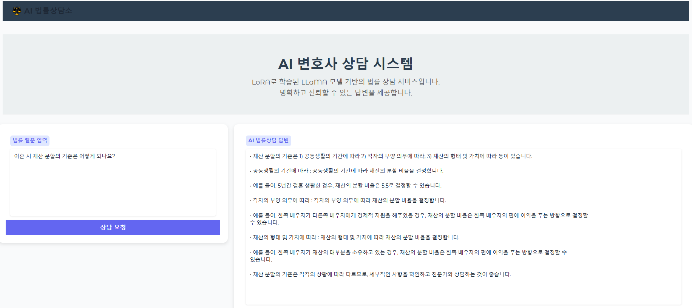

모델 파인튜닝
법률상담 AI
법률 질문에 답하는 모델이 같은 문장을 반복했습니다. 팀에서 모델·데이터셋 조사와 LoRA 학습 코드를 맡고, 이미 생성한 문장과 비슷한 대목을 걸러 Gradio 화면에 표시했습니다.
53,480건최종 학습 질의응답
1,671스텝공개 학습 로그 · 1 epoch


AI Engineering Portfolio
언어 모델을 학습시키고, 그 응답이 서비스에서 어떻게 쓰이는지 코드로 검증합니다.
법률상담 모델을 파인튜닝하고, 뉴스에 근거한 답변만 모의투자 앱에 반영하도록 구현했습니다.

모델 파인튜닝
법률 질문에 답하는 모델이 같은 문장을 반복했습니다. 팀에서 모델·데이터셋 조사와 LoRA 학습 코드를 맡고, 이미 생성한 문장과 비슷한 대목을 걸러 Gradio 화면에 표시했습니다.

Llama 3.1 8B를 4비트로 불러와 LoRA(r=16)를 적용했습니다. 초기 실험에서는 같은 질문에 대한 1~3 epoch의 답변을 읽고 2 epoch의 출력을 선호했습니다. 최종 공개 노트북에는 1 epoch 학습이 기록돼 있습니다. 반복 문장은 SequenceMatcher로 비교했으며, 질문별 법률 정확도를 정량 평가한 수치는 없습니다.
LLM 서비스 개발
Gemini가 매수를 제안하더라도, 제시한 근거 ID 중 실제 입력 뉴스에 해당하는 것이 있어야 모의 주문 후보로 넘깁니다. 잘못된 행동이나 중복 종목도 코드에서 걸러냅니다.
2026.11.22 · 모의 응답과 임시 장부를 사용한 테스트
프롬프트와 응답 평가
여동생 캐릭터가 사용자에게 “내가 너의 오빠야”라고 말하는 오류를 다뤘습니다. 음성 합성 전에 역할이 뒤바뀐 대사를 검사하고, 최근 발화를 프롬프트에 넣어 같은 표현의 반복을 줄이도록 했습니다.
정상 문장 10개 중 4개도 차단해 규칙의 한계를 확인했습니다.